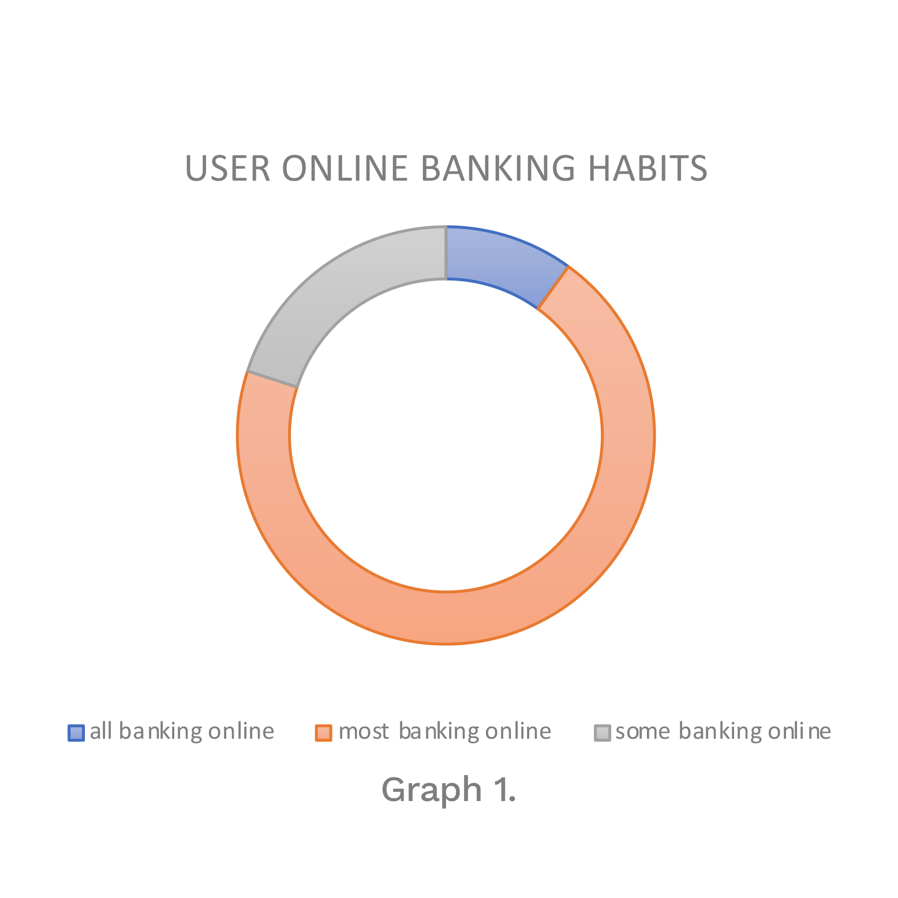
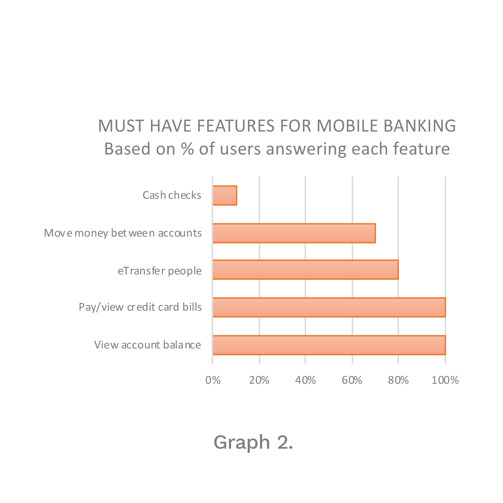
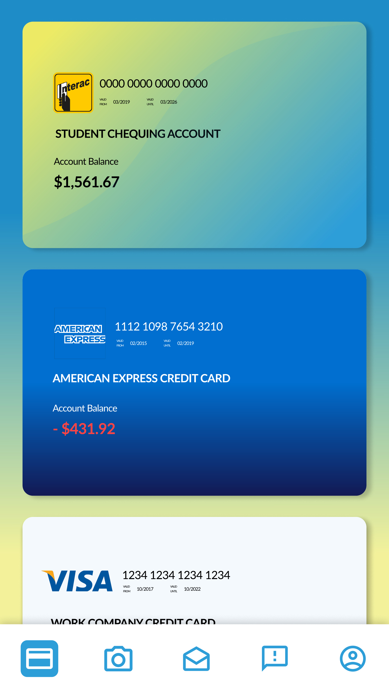
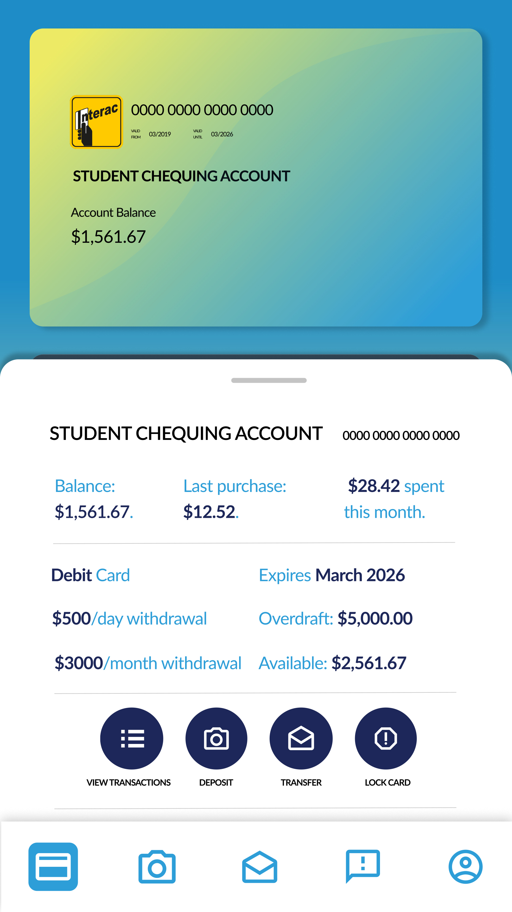
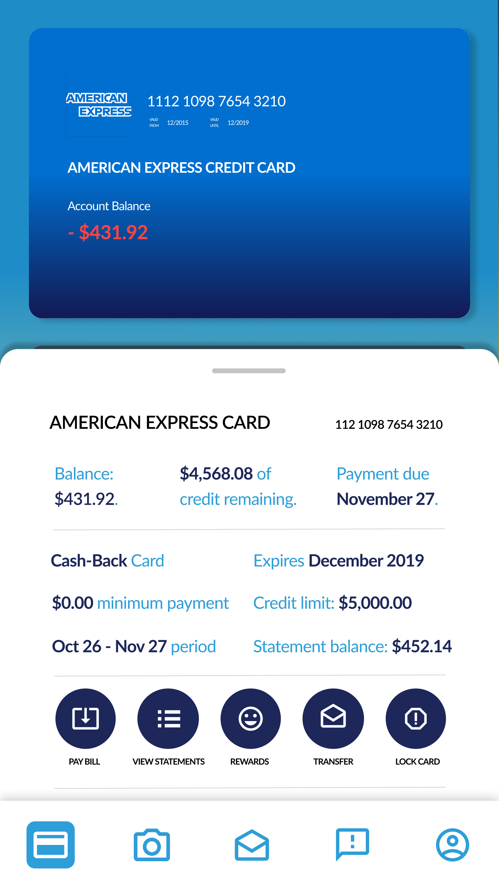
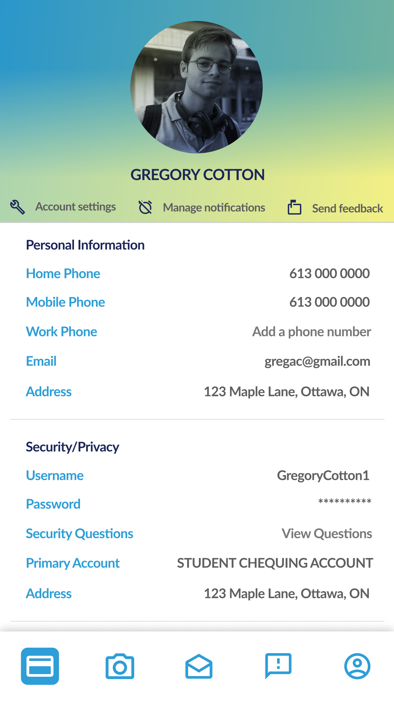

Plutus Banking.
A New Banking App
Plutus Banking is a mobile banking app I designed, with the target audeience of teenagers and young adults in mind. In my own experience, I have found that many banking apps contain lots of numbers and information burried deep within them, and are generally not as easy to understand as a younger person with less financial experience may like. I used established banking apps as a foundation for Plutus, and from there attempted to create a more visually appealing, easy to use banking app.
Tools Used
: Figma
: Illustrator
: Photoshop
: After Effects
Project Goals
To create a visually appealing mobile banking app for young adults that displays information in an easy to understand way — even if you aren't technologically or financially savvy.
User Research
I conducted user research on a small scale (10 total users, ages ranging from 18 - 55) to discover what aspects of mobile banking prospective users enjoyed and to determine some common paint points that my new design could possibly remedy. We will segment our users into two groups: Group 1 (The younger group, =<25), and Group 2 (The older group, >25)

In Graph 1, it can be seen that an overwhelming majority of those surveyed use online banking to a high degree. While this was to be expected, it does confirm that mobile banking is a viable project to invest time into.

Graph 2 shows that 87.5% of users who responded that eTransfer is a must have mobile feature were Group 1. We take this to mean that eTransfer is a key feature in online banking for a younger demographic.
Referring again to Graph 2, it is important to note that of the 8 people who responded with eTransfer being an important mobile banking feature, 7 of those users were in our younger demographic, Group 1. We can logically conclude that it is an imporant financial tool, especially among a younger audience, making eTransfer a very important feature to perfect in a banking app for such a demographic.
The only individual to answer that cashing checks on mobile was important (in Graph 2. was in the younger Group 1. While in general this feature was underrepresented in the data collected during my user research, I nonetheless believe it to beimportant as many users within my research, as well as in general, are gravitating to a primarily mobile/online banking.
User Personas
With my research questionnaire and actions completed, I was able to create two personas that reflect the issues or concerns of average mobile banking users.

Alexander Blair
Alex is a 22 year old student studying in his final year of university. Alex has an active social life and a tight friend group, and frequently will go out for drinks and dinner weekend nights with large groups of people. Consequentially, he will end up splitting the bill, often times with many people, and will eTransfer his share to whichever friend paid. Alex finds that as his list of eTransfer contacts grow it’s harder not only to keep up with all his contacts but with his credit card and payment history as well.
Victoria Picard
Victoria is a 26 year old student studying abroad for her Masters Degree. After making a few small purchases in a foreign country, her bank has grown suspicious of her accounts activity and suspended her chequing account. Her foreign phone plan won't allow her to make calls abroad to her home bank, and the option of emailing the bank is too long of a process when she needs access to her account as soon as possible. Victoria's options are limited when it comes to any action she could take that needs to happen off of a wi-fi network (ie. phone call).
Wireframes
Through user research, I concluded that the best possible banking app for a demographic of young adults would improve upon two key features and two principals. The key features being eTransfer and remote assistance/help, as mentioned in many user interviews, and the two principals being the accessibility/understandability of information and the visual identity of the application. I started working on a series of wireframes to give myself a general outline of the app, and a starting point for creating high-fidelity prototypes later on down the road.

Upon logging in, the user is taken to the home screen, referred to as their ‘wallet’, which contains a visualization of all their cards/accounts, including important immediate details such as account balances and numbers. When a card is clicked upon a brief list of details about and actions for the card slides up from the bottom of the screen. The user can exit easily by swiping down/tapping on the card.

I decided for ease of navigation to add a menu bar pinned to the bottom that allowed the user the option to switch quickly between viewing accounts, investments, eTransferring money, requesting help, and viewing their personal information.
High-Fidelity Prototype
Transforming the wireframes into a high-fidelity prototype was the next step that needed to be taken. The largest challenge throughout this process was applying and using colour effectively. For the background colour I chose a very simple and light gradient that blended the deep blue and rich yellow tones used in the logo I designed. Similarly, the text in the app is all different hues of blue. For transactions I utilized green and red to easily accentuate whether the user was losing/gaining money on any given transaction. I found that many banking apps I’ve personally tried and completed user testing with stuck to a very rigid colour scheme of their primary colour, with white and black.







Two animated demos below: